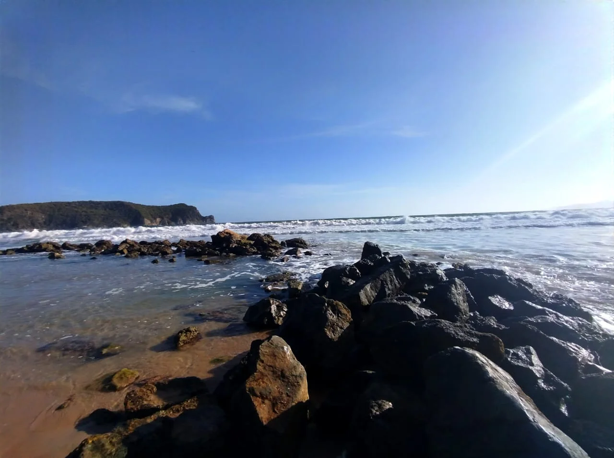
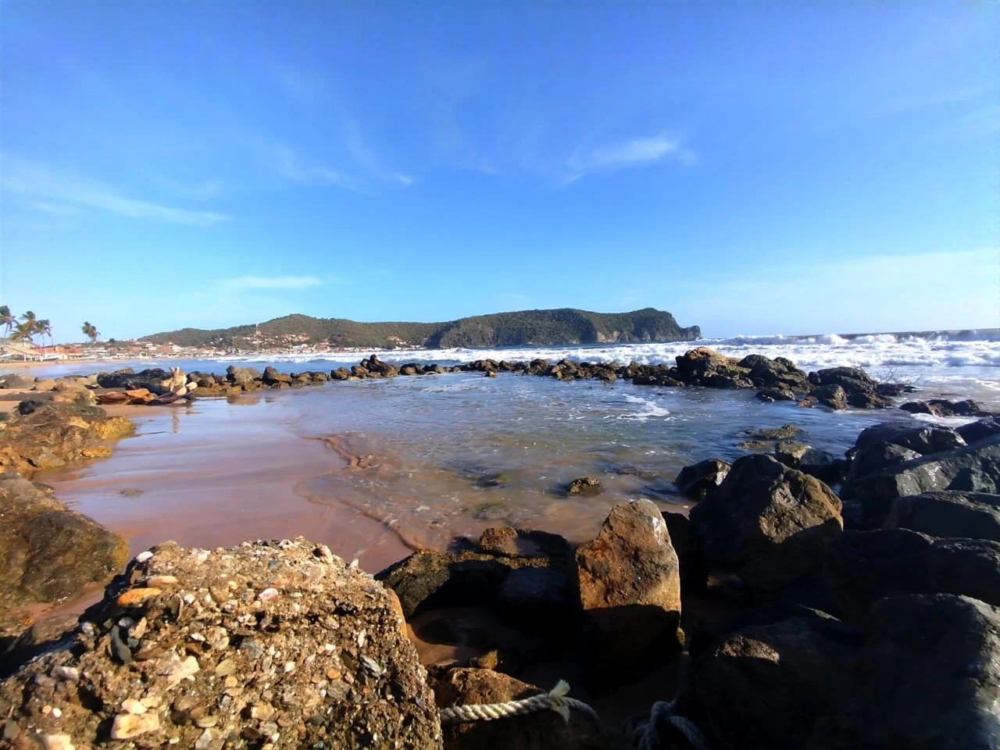
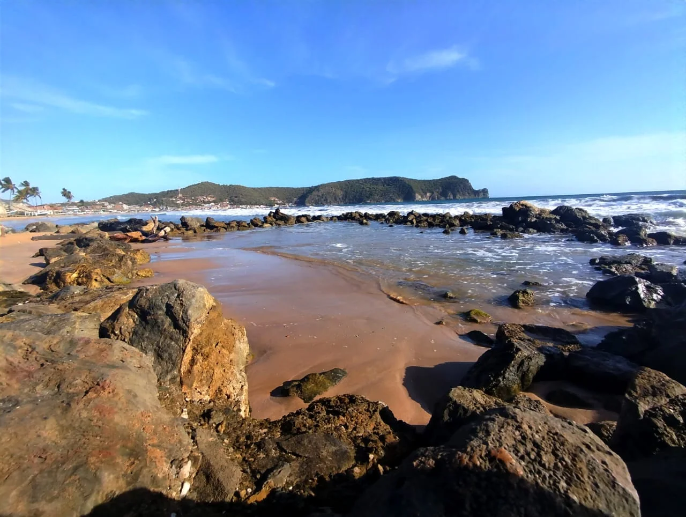
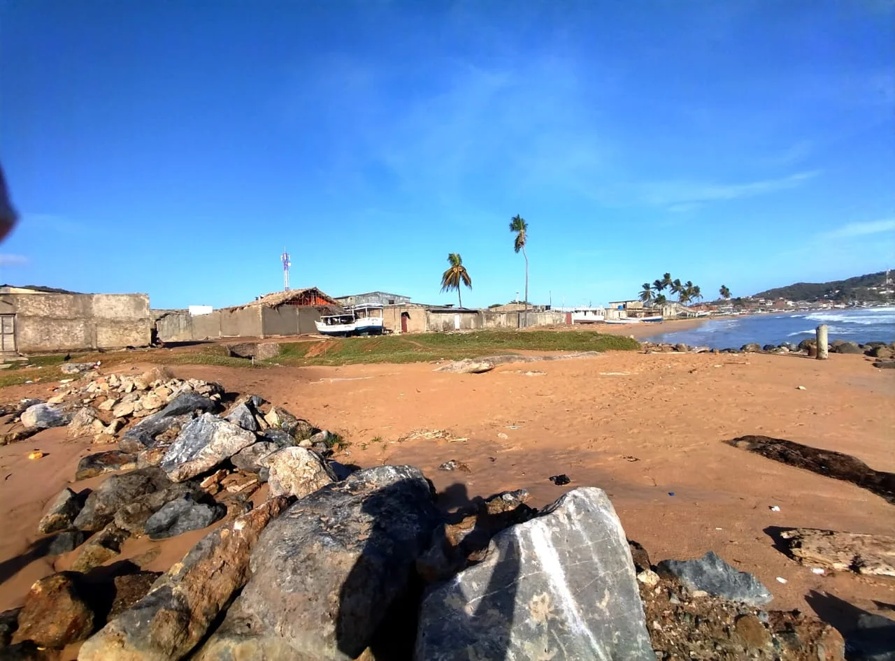
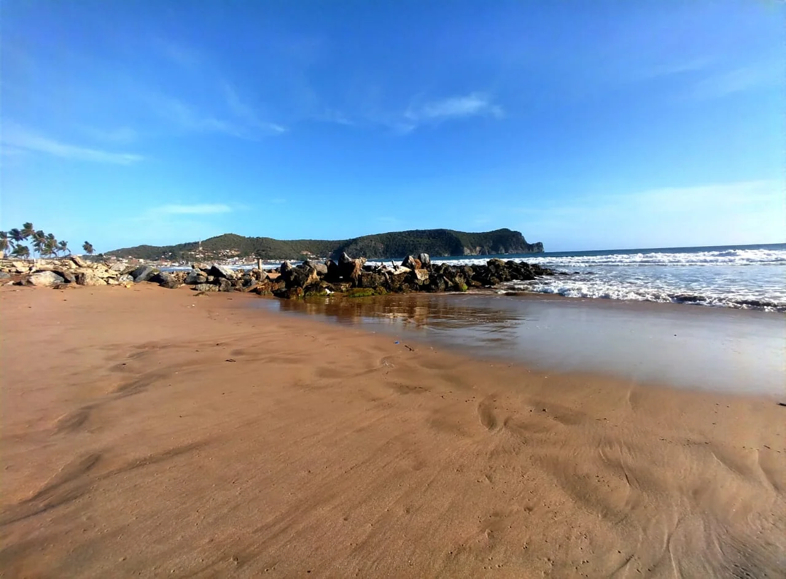
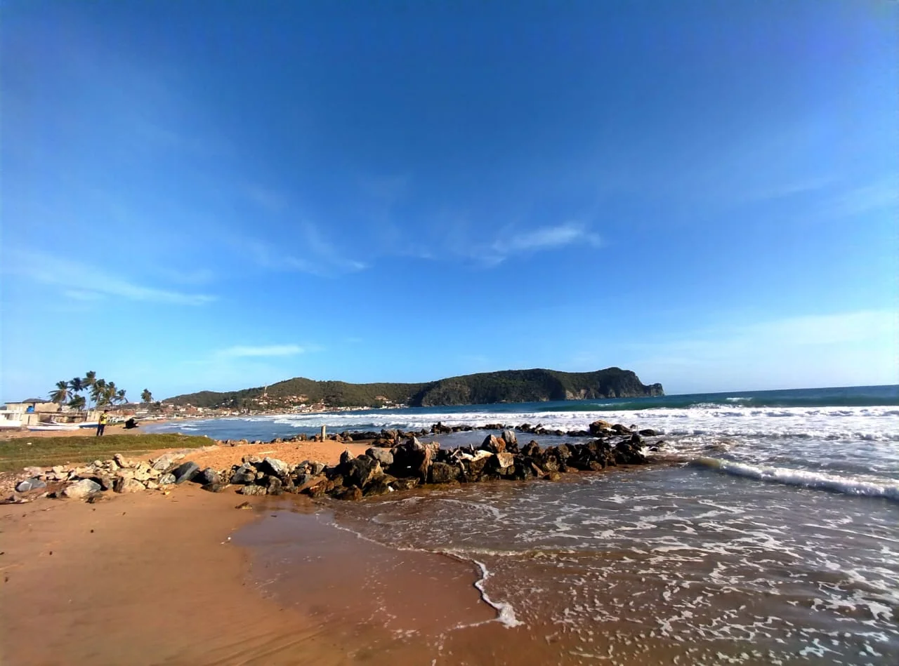
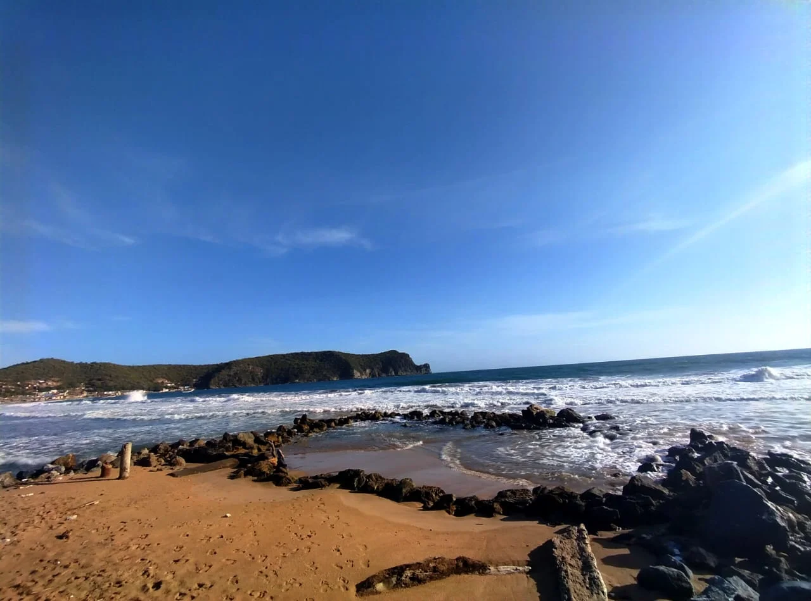
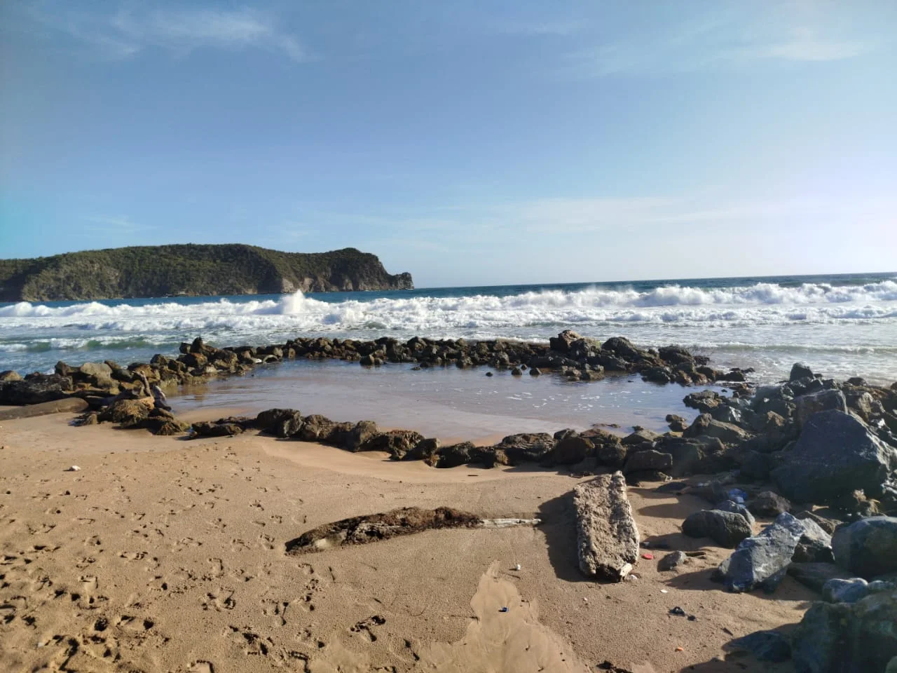

Prepárate para descubrir un rincón especial en El Morro de Puerto Santo: el Tajamar, un verdadero protagonista en este idílico paisaje.




Sus aguas, tan transparentes que parecen espejos del cielo, te invitan a sumergirte y olvidar el mundo. Rodeada de montañas que se visten de un verde intenso, esta playa no solo es un festín para la vista, Es el lugar perfecto para respirar profundo, para escuchar el canto de las aves y para simplemente ser.




Cómo Llegar
Ubicada en El Morro de Puerto Santo, esta hermosa playa es de facil acceso ubicada en sector "El Cementerio" puedes llegar a ella desde "Los Cocos" o por "La Salina" como punto de referencia la iglesia "Pente Coste Luz del Mundo".
Mejores Días
Los días más recomendados para visitar son los fines de semana, especialmente sabado o domingo, estos dias encontrarás mayor tranquilidad y aguas más cristalinas. y por supuesto en tempodadas como lo son las Vacasiones de Verano y la Semana Santa.
¿Por Qué Visitarla?
Debido a su estructura de rocas la hace mas llamativa tanto para turistas como para lugareños de El Morro y por su belleza natural la convierten en un destino único para desconectar y recargar energías.
El Tajamar
Una historia detallada y documentada de la construcción de el Tajamar
no se encuentra facilmente en registros, pero es muy probable que su origen
sea parte de la historia local y se conoce mejor por los residentes. Un Tajamar
también conocido localmente como "Ataja mar" y "Rompeolas", es una estructura de
ingeniería costera que cumple la tarea literal de atajar el mar para la protección
de la costa y el beneficio de la comunidad pesquera.
Aunque hoy en día no cumple con la función principal de su objetivo, se ha convertido
en una piscina natural, adaptandose a su entorno y a la originalidad de la naturaleza.
